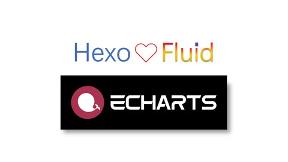

Hexo Theme Fluid
首页
归档
分类
标签
关于
友链
文档
友情链接
>

使用 ECharts 插件绘制炫酷图表
前言本文主要讲如何应用于 Hexo 部署中，如果还不太熟悉 GitHub Actions 可以看这篇文章，简单地说 Actions 就是在设定的时机触发创建一个虚拟云环境，然后执行一连串动作，从而实现自动部署的功能。 创建工作流首先要保证你的 Hexo 博客项目是全部提交到 GitHub 仓库中，然后在博客目录下创建 .github/workflows/xxx.yml 文件，文件名任意。 文件内容
2020-6-23
功能增强
用户经验
使用 ECharts 插件绘制炫酷图表
前言本文主要讲如何应用于 Hexo 部署中，如果还不太熟悉 GitHub Actions 可以看这篇文章，简单地说 Actions 就是在设定的时机触发创建一个虚拟云环境，然后执行一连串动作，从而实现自动部署的功能。 创建工作流首先要保证你的 Hexo 博客项目是全部提交到 GitHub 仓库中，然后在博客目录下创建 .github/workflows/xxx.yml 文件，文件名任意。 文件内容
2020-6-23
功能增强
用户经验